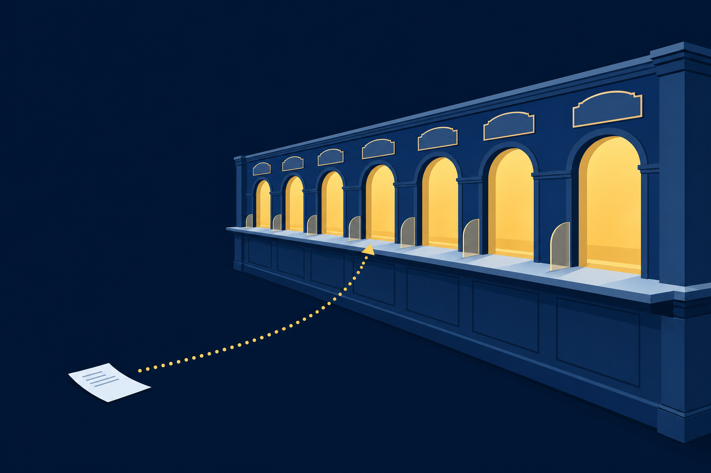
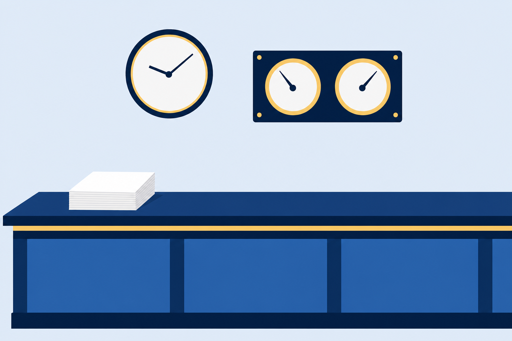
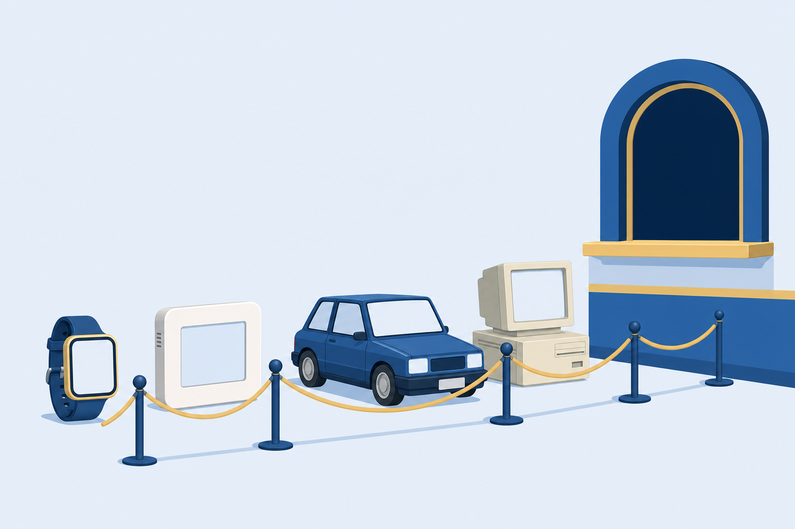

01
Summarize
the services networked hosts provide, and the numbered window where each one answers.

File, web, mail, directory, and time services: the counters your network visits all day, and what to do when one stops answering.
Start here: You type an address and the page appears. Who answered, and how did your request find them?
the services networked hosts provide, and the numbered window where each one answers.
Internet appliances and the embedded devices that share your network.
a request that never arrives: wired, wireless, and voice.
One request rides the whole class: parsed, routed, secured, filtered, balanced, and, late in the hour, lost. Watch every stop it makes.
Every trip to a server starts as a request.
Slip #7-201, decoded: ask the web service on www.comptia.org for the page at /aplus.
Web pages
#7-201 waits hereSecure web
Mail going out
The mailbox
Remote shell
Time checks
One host can run many services at once. The port on the request picks the window that answers.
With a partner: The protocol reads http. Does the slip go to window 80 or window 443? And what would have to change on the slip to move it?
TLS starts with the server's ID.
Did a certificate authority sign it?
Slip #7-201 upgraded to https. The reply comes back sealed from window 443.
Writes and hands off.
Relays toward the host.
Holds the message.
Fetches and displays.
POP3 at window 110 also serves the mailbox. The TLS twins arrive on the next slide.
Same service, same job. The twin wraps the connection in TLS certificate security.
Your device asks to join.
The network access server holds the door.
Authentication, authorization, and accounting: the decision.

With a partner: Name the service and the port for each slip before you peek.
Hands its slip to the proxy.
#7-201Translates full HTTP requests on your behalf. Filters the content coming back.
usually 8080Windows 80 and 443 answer as usual.
Any port not used by another service works for a proxy. 8080 is just the common pick.
The workload spreads across multiple systems, so the counter keeps answering as the line grows.
Screens mail before it reaches the mailbox.
Unified threat management: one appliance runs network security.

The slip leaves here.
First stop on the run.
Where the run lands.
The port answers, or flaps.
Port flapping: up, down, upScope first: one desk or the whole floor? Then cable configuration, then the port's VLAN.
With a partner: Choose the measure that explains a choppy call on a fast line, and name the setting that protects voice.
Web, mail out, mailbox: name each plain port and its locked twin.
A proxy and a load balancer both stand before servers. What does each one do?
The wired path from desk to switch: name the three stops you check.
Next step: Run the CertMaster labs: Use a Proxy Server, Fix a Network Connection, and Troubleshoot a Network Issue. Chapter 8 moves the servers off the counter and into the cloud.